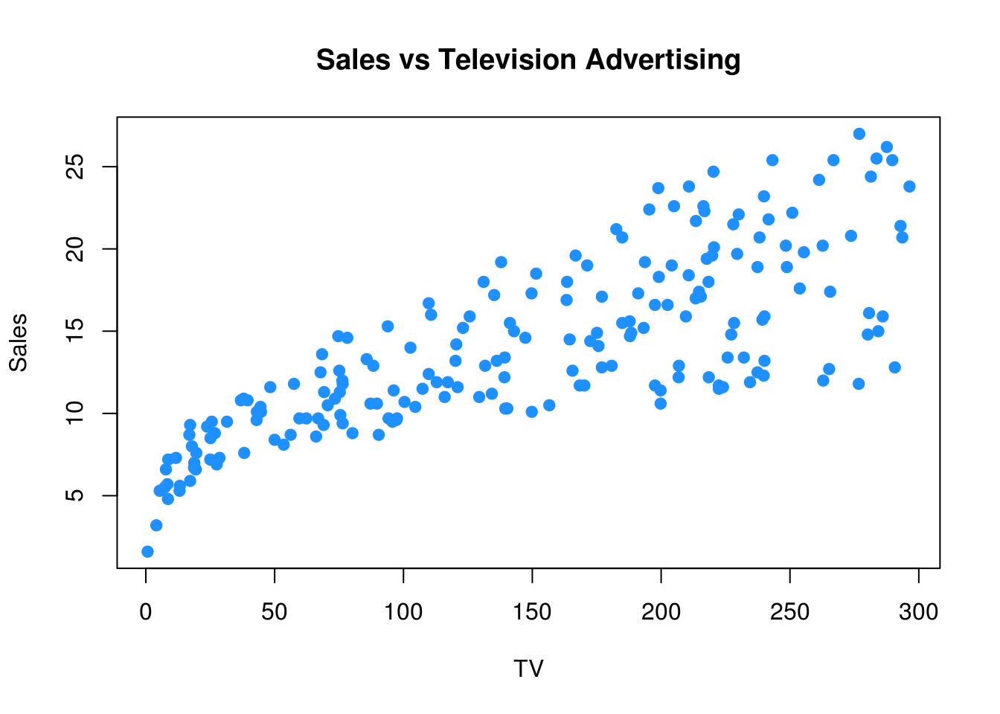
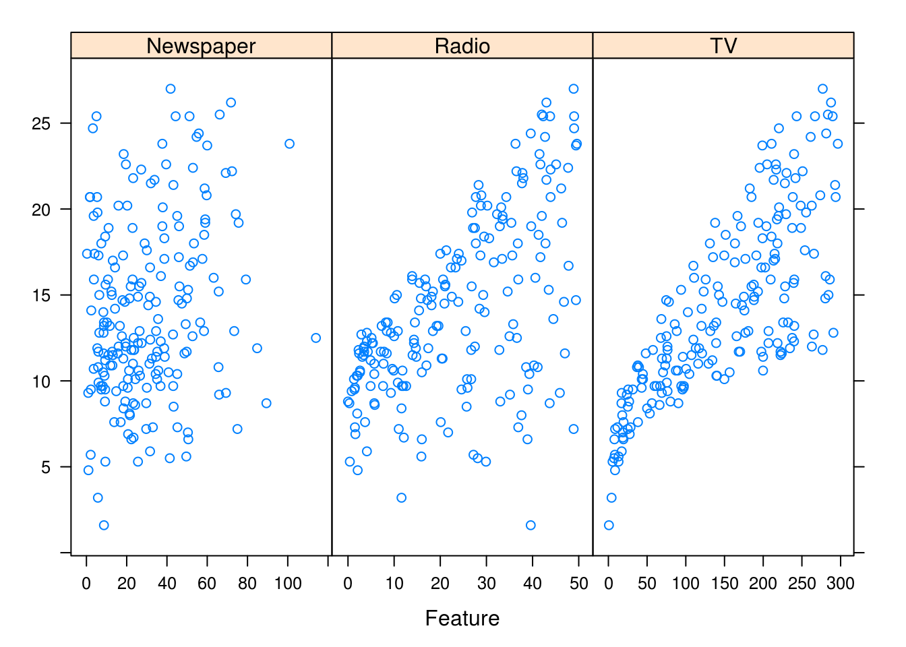

Chapter 4 Regression Basics in R
This chapter will recap the basics of performing regression analyses in R. For more detailed coverage, see Applied Statistics with R.
We will use the Advertising data associated with Introduction to Statistical Learning.
library(readr)
Advertising = read_csv("data/Advertising.csv")After loading data into R, our first step should always be to inspect the data. We will start by simply printing some observations in order to understand the basic structure of the data.
Advertising## # A tibble: 200 × 4
## TV Radio Newspaper Sales
## <dbl> <dbl> <dbl> <dbl>
## 1 230.1 37.8 69.2 22.1
## 2 44.5 39.3 45.1 10.4
## 3 17.2 45.9 69.3 9.3
## 4 151.5 41.3 58.5 18.5
## 5 180.8 10.8 58.4 12.9
## 6 8.7 48.9 75.0 7.2
## 7 57.5 32.8 23.5 11.8
## 8 120.2 19.6 11.6 13.2
## 9 8.6 2.1 1.0 4.8
## 10 199.8 2.6 21.2 10.6
## # ... with 190 more rowsBecause the data was read using read_csv(), Advertising is a tibble. We see that there are a total of 200 observations and 4 variables, each of which is numeric. (Specifically double-precision vectors, but more importantly they are numbers.) For the purpose of this analysis, Sales will be the response variable. That is, we seek to understand the relationship between Sales, and the predictor variables: TV, Radio, and Newspaper.
4.1 Visualization for Regression
After investigating the structure of the data, the next step should be to visualize the data. Since we have only numeric variables, we should consider scatter plots.
We could do so for any individual predictor.
plot(Sales ~ TV, data = Advertising, col = "dodgerblue", pch = 20, cex = 1.5,
main = "Sales vs Television Advertising")
The pairs() function is a useful way to quickly visualize a number of scatter plots.
pairs(Advertising)
Often, we will be most interested in only the relationship between each predictor and the response. For this, we can use the featurePlot() function from the caret package. (We will use the caret package more and more frequently as we introduce new topics.)
library(caret)
featurePlot(x = Advertising[ , c("TV", "Radio", "Newspaper")], y = Advertising$Sales)
We see that there is a clear increase in Sales as Radio or TV are increased. The relationship between Sales and Newspaper is less clear. How all of the predictors work together is also unclear, as there is some obvious correlation between Radio and TV. To investigate further, we will need to model the data.
4.2 The lm() Function
The following code fits an additive linear model with Sales as the response and each remaining variable as a predictor. Note, by not using attach() and instead specifying the data = argument, we are able to specify this model without using each of the variable names directly.
mod_1 = lm(Sales ~ ., data = Advertising)
# mod_1 = lm(Sales ~ TV + Radio + Newspaper, data = Advertising)Note that the commented line is equivalent to the line that is run, but we will often use the response ~ . syntax when possible.
4.3 Hypothesis Testing
The summary() function will return a large amount of useful information about a model fit using lm(). Much of it will be helpful for hypothesis testing including individual tests about each predictor, as well as the significance of the regression test.
summary(mod_1)##
## Call:
## lm(formula = Sales ~ ., data = Advertising)
##
## Residuals:
## Min 1Q Median 3Q Max
## -8.8277 -0.8908 0.2418 1.1893 2.8292
##
## Coefficients:
## Estimate Std. Error t value Pr(>|t|)
## (Intercept) 2.938889 0.311908 9.422 <2e-16 ***
## TV 0.045765 0.001395 32.809 <2e-16 ***
## Radio 0.188530 0.008611 21.893 <2e-16 ***
## Newspaper -0.001037 0.005871 -0.177 0.86
## ---
## Signif. codes: 0 '***' 0.001 '**' 0.01 '*' 0.05 '.' 0.1 ' ' 1
##
## Residual standard error: 1.686 on 196 degrees of freedom
## Multiple R-squared: 0.8972, Adjusted R-squared: 0.8956
## F-statistic: 570.3 on 3 and 196 DF, p-value: < 2.2e-16mod_0 = lm(Sales ~ TV + Radio, data = Advertising)The anova() function is useful for comparing two models. Here we compare the full additive model, mod_1, to a reduced model mod_0. Essentially we are testing for the significance of the Newspaper variable in the additive model.
anova(mod_0, mod_1)## Analysis of Variance Table
##
## Model 1: Sales ~ TV + Radio
## Model 2: Sales ~ TV + Radio + Newspaper
## Res.Df RSS Df Sum of Sq F Pr(>F)
## 1 197 556.91
## 2 196 556.83 1 0.088717 0.0312 0.8599Note that hypothesis testing is not our focus, so we omit many details.
4.4 Prediction
The predict() function is an extremely versatile function, for, prediction. When used on the result of a model fit using lm() it will, by default, return predictions for each of the data points used to fit the model. (Here, we limit the printed result to the first 10.)
head(predict(mod_1), n = 10)## 1 2 3 4 5 6 7
## 20.523974 12.337855 12.307671 17.597830 13.188672 12.478348 11.729760
## 8 9 10
## 12.122953 3.727341 12.550849Note that the effect of the predict() function is dependent on the input to the function. Here, we are supplying as the first argument a model object of class lm. Because of this, predict() then runs the predict.lm() function. Thus, we should use ?predict.lm() for details.
We could also specify new data, which should be a data frame or tibble with the same column names as the predictors.
new_obs = data.frame(TV = 150, Radio = 40, Newspaper = 1)We can then use the predict() function for point estimates, confidence intervals, and prediction intervals.
Using only the first two arguments, R will simply return a point estimate, that is, the “predicted value,” \(\hat{y}\).
predict(mod_1, newdata = new_obs)## 1
## 17.34375If we specify an additional argument interval with a value of "confidence", R will return a 95% confidence interval for the mean response at the specified point. Note that here R also gives the point estimate as fit.
predict(mod_1, newdata = new_obs, interval = "confidence")## fit lwr upr
## 1 17.34375 16.77654 17.91096Lastly, we can alter the level using the level argument. Here we report a prediction interval instead of a confidence interval.
predict(mod_1, newdata = new_obs, interval = "prediction", level = 0.99)## fit lwr upr
## 1 17.34375 12.89612 21.791384.5 Unusual Observations
R provides several functions for obtaining metrics related to unusual observations.
resid()provides the residual for each observationhatvalues()gives the leverage of each observationrstudent()give the studentized residual for each observationcooks.distance()calculates the influence of each observation
head(resid(mod_1), n = 10)## 1 2 3 4 5 6
## 1.57602559 -1.93785482 -3.00767078 0.90217049 -0.28867186 -5.27834763
## 7 8 9 10
## 0.07024005 1.07704683 1.07265914 -1.95084872head(hatvalues(mod_1), n = 10)## 1 2 3 4 5 6
## 0.025202848 0.019418228 0.039226158 0.016609666 0.023508833 0.047481074
## 7 8 9 10
## 0.014435091 0.009184456 0.030714427 0.017147645head(rstudent(mod_1), n = 10)## 1 2 3 4 5 6
## 0.94680369 -1.16207937 -1.83138947 0.53877383 -0.17288663 -3.28803309
## 7 8 9 10
## 0.04186991 0.64099269 0.64544184 -1.16856434head(cooks.distance(mod_1), n = 10)## 1 2 3 4 5
## 5.797287e-03 6.673622e-03 3.382760e-02 1.230165e-03 1.807925e-04
## 6 7 8 9 10
## 1.283058e-01 6.452021e-06 9.550237e-04 3.310088e-03 5.945006e-034.6 Adding Complexity
We have a number of ways to add complexity to a linear model, even allowing a linear model to be used to model non-linear relationships.
4.6.1 Interactions
Interactions can be introduced to the lm() procedure in a number of ways.
We can use the : operator to introduce a single interaction of interest.
mod_2 = lm(Sales ~ . + TV:Newspaper, data = Advertising)
coef(mod_2)## (Intercept) TV Radio Newspaper TV:Newspaper
## 3.8730824491 0.0392939602 0.1901312252 -0.0320449675 0.0002016962The response ~ . ^ k syntax can be used to model all k-way interactions. (As well as the appropriate lower order terms.) Here we fit a model with all two-way interactions, and the lower order main effects.
mod_3 = lm(Sales ~ . ^ 2, data = Advertising)
coef(mod_3)## (Intercept) TV Radio Newspaper
## 6.460158e+00 2.032710e-02 2.292919e-02 1.703394e-02
## TV:Radio TV:Newspaper Radio:Newspaper
## 1.139280e-03 -7.971435e-05 -1.095976e-04The * operator can be used to specify all interactions of a certain order, as well as all lower order terms according to the usual hierarchy. Here we see a three-way interaction and all lower order terms.
mod_4 = lm(Sales ~ TV * Radio * Newspaper, data = Advertising)
coef(mod_4)## (Intercept) TV Radio
## 6.555887e+00 1.971030e-02 1.962160e-02
## Newspaper TV:Radio TV:Newspaper
## 1.310565e-02 1.161523e-03 -5.545501e-05
## Radio:Newspaper TV:Radio:Newspaper
## 9.062944e-06 -7.609955e-07Note that, we have only been dealing with numeric predictors. Categorical predictors are often recorded as factor variables in R.
library(tibble)
cat_pred = tibble(
x1 = factor(c(rep("A", 10), rep("B", 10), rep("C", 10))),
x2 = runif(n = 30),
y = rnorm(n = 30)
)
cat_pred## # A tibble: 30 × 3
## x1 x2 y
## <fctr> <dbl> <dbl>
## 1 A 0.816365712 0.17200153
## 2 A 0.676862076 1.20725436
## 3 A 0.006783549 -2.41782264
## 4 A 0.743743436 0.76141053
## 5 A 0.400004317 -1.09537569
## 6 A 0.264767796 1.41341504
## 7 A 0.260642493 -0.08990855
## 8 A 0.730398811 -0.42773448
## 9 A 0.192407730 0.62905458
## 10 A 0.710715771 0.83161328
## # ... with 20 more rowsNotice that in this simple simulated tibble, we have coerced x1 to be a factor variable, although this is not strictly necessary since the variable took values A, B, and C. When using lm(), even if not a factor, R would have treated x1 as such. Coercion to factor is more important if a cateogical variable is coded for example as 1, 2 and 3. Otherwise it is treated as numeric, which creates a difference in the regression model.
The following two models illustrate the effect of factor variables on linear models.
cat_pred_mod_add = lm(y ~ x1 + x2, data = cat_pred)
coef(cat_pred_mod_add)## (Intercept) x1B x1C x2
## 0.22021419 0.02769777 -0.03875294 -0.25365650cat_pred_mod_int = lm(y ~ x1 * x2, data = cat_pred)
coef(cat_pred_mod_int)## (Intercept) x1B x1C x2 x1B:x2 x1C:x2
## -0.7702473 1.5325378 1.6127294 1.8086485 -3.2131322 -3.09018084.6.2 Polynomials
Polynomial terms can be specified using the inhibit function I() or through the poly() function. Note that these two methods produce different coefficients, but the same residuals! This is due to the poly() function using orthogonal polynomials by default.
mod_5 = lm(Sales ~ TV + I(TV ^ 2), data = Advertising)
coef(mod_5)## (Intercept) TV I(TV^2)
## 6.114120e+00 6.726593e-02 -6.846934e-05mod_6 = lm(Sales ~ poly(TV, degree = 2), data = Advertising)
coef(mod_6)## (Intercept) poly(TV, degree = 2)1 poly(TV, degree = 2)2
## 14.022500 57.572721 -6.228802all.equal(resid(mod_5), resid(mod_6))## [1] TRUEPolynomials and interactions can be mixed to create even more complex models.
mod_7 = lm(Sales ~ . ^ 2 + poly(TV, degree = 3), data = Advertising)
# mod_7 = lm(Sales ~ . ^ 2 + I(TV ^ 2) + I(TV ^ 3), data = Advertising)
coef(mod_7)## (Intercept) TV Radio
## 6.206394e+00 2.092726e-02 3.766579e-02
## Newspaper poly(TV, degree = 3)1 poly(TV, degree = 3)2
## 1.405289e-02 NA -9.925605e+00
## poly(TV, degree = 3)3 TV:Radio TV:Newspaper
## 5.309590e+00 1.082074e-03 -5.690107e-05
## Radio:Newspaper
## -9.924992e-05Notice here that R ignores the first order term from poly(TV, degree = 3) as it is already in the model. We could consider using the commented line instead.
4.6.3 Transformations
Note that we could also create more complex models, which allow for non-linearity, using transformations. Be aware, when doing so to the response variable, that this will affect the units of said variable. You may need to un-transform to compare to non-transformed models.
mod_8 = lm(log(Sales) ~ ., data = Advertising)
sqrt(sum(resid(mod_8) ^ 2)) # incorrect RMSE for Model 8## [1] 2.615564sqrt(sum(resid(mod_7) ^ 2)) # RMSE for Model 7## [1] 6.806914sqrt(sum(exp(resid(mod_8)) ^ 2)) # correct RMSE for Model 8## [1] 14.4703